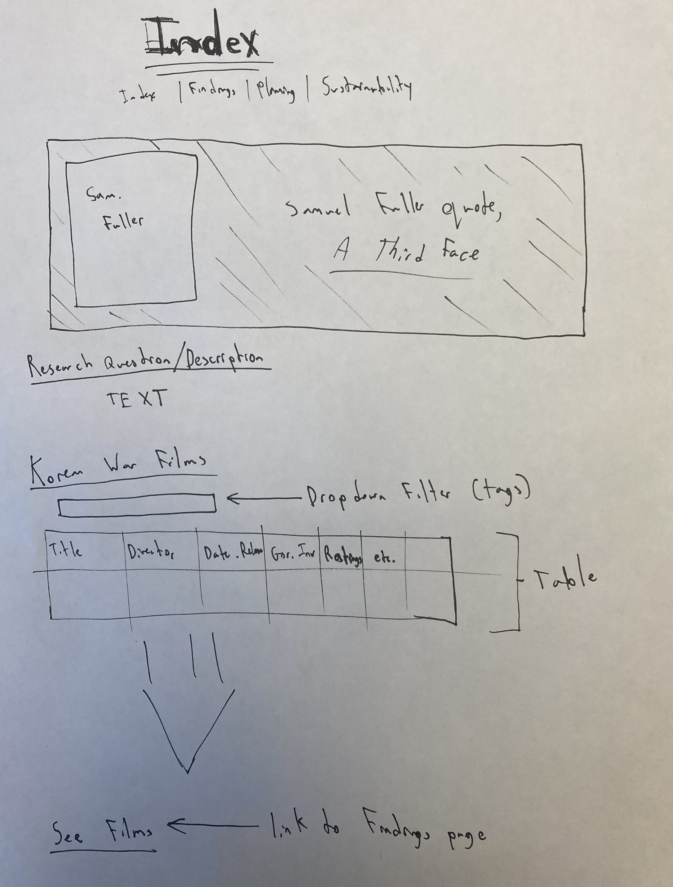
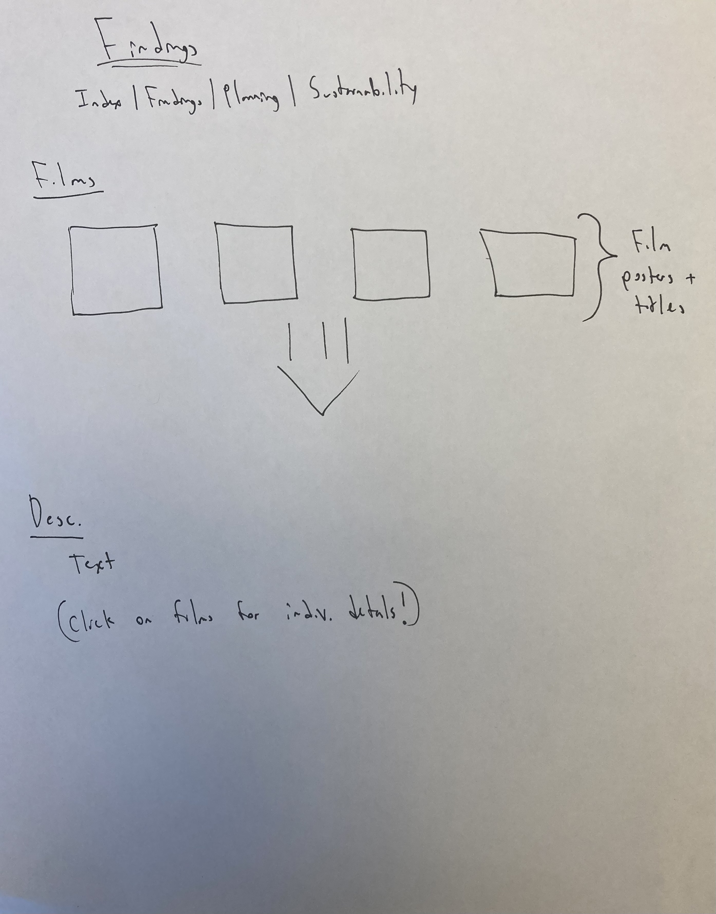
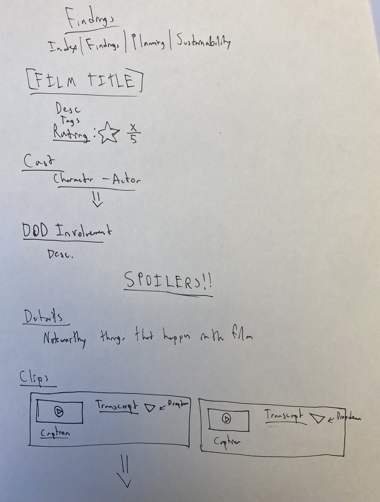
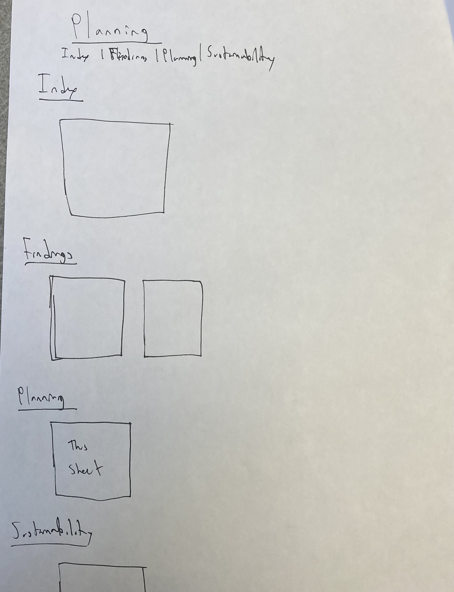
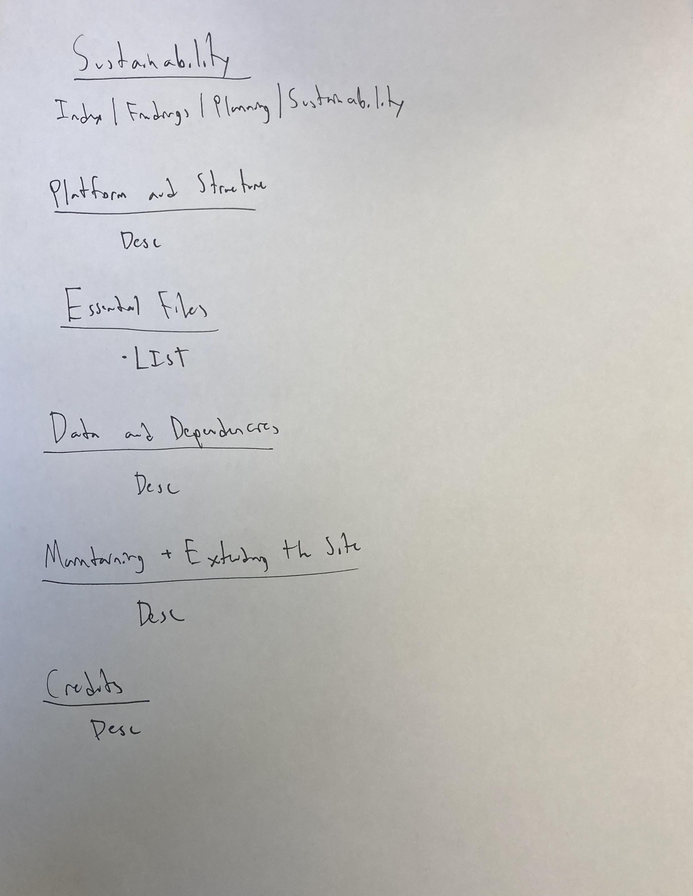

NOTE: Interface sketches and design notes will be added later.
findings.html. Currently, only the first four have their own dedicated webpages. The rest link back to index.html.What information about these films would you consider most useful/interesting?
Is the site easy to nativate? Is the navigation intuitive?
How would you be most likely to use a site like this? Does the current layout facilitate this percieved use?